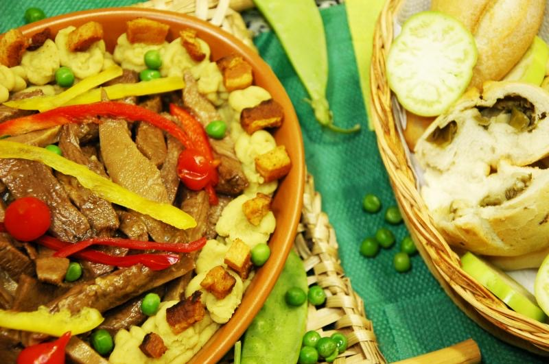

Carnes · Bovinos
Língua com purê de ervilhas e bacon

Ingredientes
- 1 língua
- 3 colheres (sopa) de óleo
- 1 cebola em rodelas
- 1 dente de alho amassado
- Sal a gosto
- 1 folha de louro
- 2 colheres (sopa) de açúcar
- ½ copo de vinho branco
- 2 colheres (sopa) de farinha de trigo
- 2 xícaras (chá) de ervilhas secas
- 1 colher (sopa) de manteiga
- 5 fatias de bacon
Modo de preparo
- Antes de aferventar, bata a língua com força algumas vezes na pia — assim fica mais macia. Afervente cerca de meia hora e retire a pele.
- Já limpa, refogue no óleo com a cebola, o alho, o louro, sal e o açúcar.
- Cozinhe cerca de 1 hora na panela de pressão. Retire a língua e reduza o molho; junte o vinho branco e a farinha.
- Para o purê: cozinhe as ervilhas em 1 litro de água até ficarem macias; passe no liquidificador ou peneira. Use pouco sal (o bacon já salga). Incorpore a manteiga.
- Frite o bacon bem torradinho e, na hora de servir, despeje sobre o purê com a própria gordura. Sirva com a língua e o molho.
Observação: receita manuscrita da família.